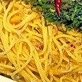

オリジナルレシピ
タコのカルパッチョ
 コレステロールの上昇を抑える働きのあるタウリンが含まれます。
コレステロールの上昇を抑える働きのあるタウリンが含まれます。
レモン果汁などさわやかな酸味、セロリやかいわれ菜などの香りのある野菜を上手に加えると、塩分を抑えてもおいしいおつまみになります。
しらすのペペロンチーノ
今回は、ごはんの友のしらすを使った簡単パスタ、しらすのペペロンチーノをご紹介します。
味付けはしらすの塩気とパスタの茹で汁を使います。ソースをあらかじめ作って茹で上がったパスタを絡めるので失敗知らずですよ。
イタリアの家庭料理を紹介するサイトです。